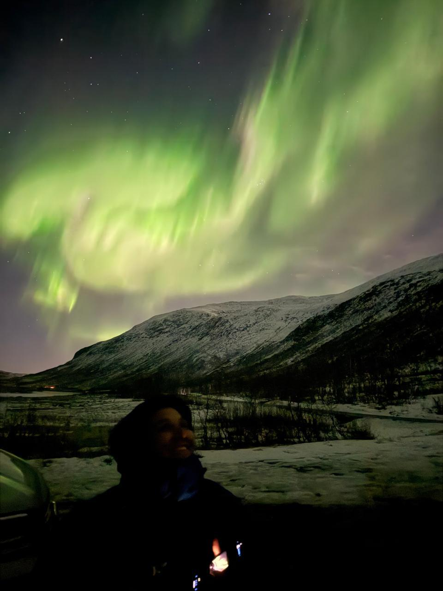
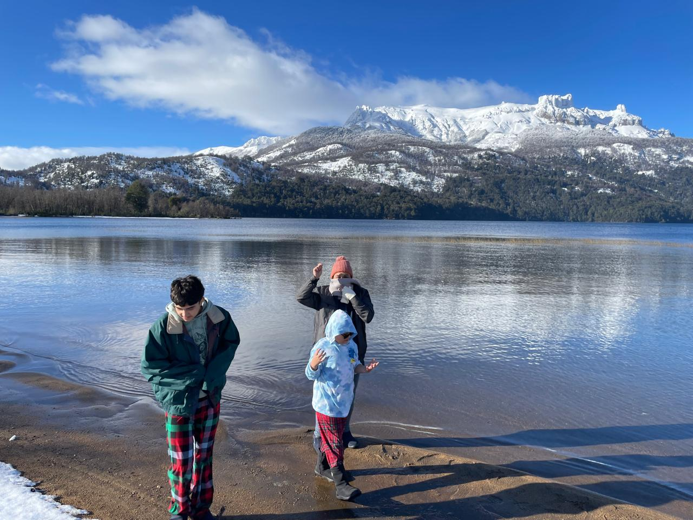

◎
Quién viaja
Regístrate una sola vez. Indica si viajas solo o acompañado y agrega los datos básicos de tus acompañantes para que ASTRA considere las características del grupo.
Dinos dónde vas, con quién viajas y qué es importante para ti. ASTRA investiga, organiza y convierte tus ideas en una ruta que puedes seguir día por día, considerando también dónde te hospedas para ordenar mejor cada jornada.
Lee esto una vez y tendrás claro cómo obtener un itinerario mucho más personalizado. La interfaz está diseñada para pedir solo el contexto que realmente aporta valor.
Regístrate una sola vez. Indica si viajas solo o acompañado y agrega los datos básicos de tus acompañantes para que ASTRA considere las características del grupo.
Agrega país, ciudad, fecha de llegada y número de días. Puedes incluir hasta 5 ciudades en una misma generación. Si necesitas más, crea otro itinerario para las ciudades adicionales.
Completa horarios si los conoces y escribe preferencias, restricciones y condiciones especiales: ritmo, intereses, movilidad, niños, reservas existentes o lugares imprescindibles.
Guardar tus destinos no genera ningún cargo. El pago se solicita únicamente cuando presionas Iniciar planificación. Después del pago se habilitan ASTRA e Info Chat.
Lanzamiento $2.99 · 1 generación · hasta 5 ciudades en ese itinerarioSe habilita cuando completas el pago y queda limitado a consultas relacionadas con las ciudades que ingresaste en el Planner. Puedes usarlo mientras ASTRA solicita hospedaje y transporte, y también después de recibir el itinerario.
Para proteger la velocidad y sostenibilidad del servicio, Info Chat tendrá un uso incluido por itinerario. El límite se mostrará claramente antes de pagar. La recomendación inicial es hasta 10 consultas, con respuestas concisas y enfocadas en tus ciudades.
ASTRA combina viajeros, preferencias, hospedaje, transporte y tiempo disponible para construir una secuencia lógica. Usa tu zona de hospedaje como base geográfica para ordenar las jornadas, evalúa imperdibles y day trips relevantes y busca reducir movimientos innecesarios.
Cada generación es única. Al trabajar con IA, dos solicitudes idénticas pueden producir pequeñas diferencias. ASTRA está diseñada para mantener los principios centrales: imperdibles, lógica geográfica, optimización de rutas y adaptación al contexto que proporcionaste.
El siguiente contenido es únicamente una muestra visual del nivel de detalle que puede entregar ASTRA. Tu resultado se generará específicamente para tu viaje.
| Inicio | Final | Actividad | Desde | Hacia | Transporte | Duración | Notas |
|---|---|---|---|---|---|---|---|
| 09:00 | 10:45 | Costa Sur · Traslado a Seljalandsfoss | Hospedaje / Jofurbas | Seljalandsfoss | Vehículo alquilado | Transporte: ~1 h 45 min | Salida matinal hacia la Costa Sur. Lleva impermeable y calzado con buen agarre: en invierno los senderos próximos a la cascada pueden estar mojados o helados. Antes de salir confirma carreteras y condiciones meteorológicas; evita depender únicamente del tiempo estimado si el clima empeora. |
| 10:45 | 11:45 | Seljalandsfoss · visita y fotografía | Seljalandsfoss | Seljalandsfoss | Caminata corta | Actividad: ~1 h | Explora los miradores y el sendero que bordea la cascada según las condiciones del día. En enero puede haber hielo y viento; prioriza plataformas y accesos señalizados. Si el paso posterior a la cascada está cerrado, disfruta los ángulos frontales y laterales. |
| 11:45 | 13:00 | Skógafoss · cascada y mirador | Seljalandsfoss | Skógafoss | Vehículo alquilado | Transporte: ~25 min Actividad: ~50 min |
Skógafoss impresiona por volumen y permite combinar vistas desde la base con el mirador superior. Las escaleras pueden estar húmedas o heladas: sube únicamente si las condiciones son seguras. Reserva unos minutos para fotografías desde distintos ángulos antes de continuar. |
| 13:00 | 14:00 | Almuerzo en Skógar / ruta | Skógafoss | Skógar | Caminata / vehículo | Actividad: ~1 h | Pausa de almuerzo antes de continuar hacia la costa. En temporada invernal conviene confirmar horarios de restaurantes y mantener flexibilidad; si el servicio es limitado, utiliza una opción rápida para proteger el tiempo útil de luz de la tarde. |
| 14:00 | 14:45 | Dyrhólaey · mirador costero | Skógar | Dyrhólaey | Vehículo alquilado | Transporte: ~30 min Actividad: ~15 min |
Mirador con arcos marinos y vistas amplias de la costa negra. El viento puede ser intenso y algunos accesos pueden cerrar por condiciones invernales. Mantente en zonas permitidas y adapta la parada a la visibilidad y al estado de la carretera. |
| 14:45 | 15:35 | Playa de Reynisfjara | Dyrhólaey | Reynisfjara | Vehículo alquilado | Transporte: ~10 min Actividad: ~40 min |
Arena negra y columnas basálticas en un escenario muy fotogénico. Mantén una distancia amplia del mar: las olas pueden ser impredecibles y peligrosas. Respeta las advertencias locales y nunca des la espalda al océano durante la visita. |
| 15:35 | 16:15 | Vík · parada breve | Reynisfjara | Vík | Vehículo alquilado | Transporte: ~10 min Actividad: ~30 min |
Parada breve para caminar, tomar algo caliente o comprar provisiones antes del regreso. En invierno la luz cae rápidamente; evita prolongar la estancia si las condiciones de conducción comienzan a deteriorarse. |
| 16:15 | 18:45 | Regreso al hospedaje | Vík | Hospedaje / Jofurbas | Vehículo alquilado | Transporte: ~2 h 30 min | Regreso conservador antes de que avance la noche. Revisa carretera, viento y visibilidad antes de salir. En Islandia los tiempos pueden aumentar con rapidez por clima o hielo; prioriza una conducción tranquila y añade margen adicional si las condiciones son adversas. |


Este es tu Planner. Ingresa aquí tus viajeros, destinos y preferencias. Una compra permite generar un solo itinerario de hasta 5 ciudades; el pago aparecerá únicamente cuando decidas iniciar esa generación.
Accesos útiles para reservar, moverte y mantenerte conectado. En esta vista de desarrollo mostramos las integraciones previstas; en producción se activarán individualmente al recibir aprobación.
Explora opciones de vuelo para llegar a tus destinos.
Buscar vuelos ↗Explora alternativas de vuelo para tus destinos.
Comparar vuelos ↗Busca y compara alojamiento para tus destinos.
Buscar hoteles ↗Trenes, autobuses y conexiones entre destinos.
Buscar transporte ↗Tours, entradas y actividades en destino.
Explorar experiencias ↗Compara excursiones y actividades disponibles.
Ver actividades ↗Opciones de datos móviles para tu destino.
Ver eSIM ↗Alternativas para mantenerte conectado al viajar.
Explorar conectividad ↗También podemos enlazar servicios útiles sin relación de afiliación, siempre respetando las condiciones de marca y uso de cada plataforma.
Algunos enlaces podrán ser de afiliado. ITBMO podría recibir una comisión si realizas una compra a través de ellos, sin costo adicional para ti.
ASTRA te ayuda a planificar; la información crítica debe confirmarse con fuentes actuales.
La información del mundo real cambia. Una comprobación final protege tu experiencia, especialmente cuando una reserva depende de un horario exacto.
Tráfico, clima, obras y transporte público pueden modificar los tiempos reales.
Confirma apertura, disponibilidad, entradas, precios y condiciones con el proveedor.
Verifica horarios, terminales, puntos de salida y requisitos directamente con el operador.
Revisa las condiciones actualizadas antes de actividades sensibles al clima.
Usa navegación actualizada para confirmar tu trayecto antes de desplazarte.
Visados, documentación, requisitos sanitarios y alertas deben validarse con fuentes oficiales.
Especialmente importante: nunca dependas únicamente de un tiempo de traslado estimado para llegar a un vuelo, tren, ferry, tour o actividad con hora fija. Añade margen suficiente.
No. Te registras una sola vez y ITBMO puede reconocer tu sesión en ese dispositivo. Si ingresas desde otro dispositivo, puedes iniciar sesión con tu usuario y correo electrónico.
Cada pago corresponde a una sola generación. Dentro de esa generación puedes incluir de 1 a 5 ciudades en un mismo itinerario. No son 5 itinerarios separados. Si necesitas planificar más de 5 ciudades, deberás realizar una nueva generación para las ciudades adicionales.
No hay problema: puedes dejarlos en blanco. Si ya conoces parte de tu disponibilidad, recomendamos indicar especialmente la hora de llegada del primer día y la hora límite del último día, porque ayudan a ASTRA a aprovechar mejor tu tiempo real.
Todo lo que pueda cambiar la forma de organizar tu viaje: intereses, ritmo, actividades que quieres evitar, lugares imprescindibles, reservas existentes, niños, movilidad, necesidades especiales o cualquier otra condición relevante. Cuanto mejor contexto proporciones, más personalizado podrá ser el itinerario.
Puedes completar, revisar y guardar la información del Planner sin pagar. El checkout se abre únicamente cuando presionas Iniciar planificación. El precio promocional actual de $2.99 corresponde a 1 generación, que puede incluir hasta 5 ciudades dentro de ese mismo itinerario.
Info Chat se habilita después de completar el pago. Puedes utilizarlo para resolver dudas relacionadas únicamente con las ciudades incluidas en ese itinerario, por ejemplo hospedaje, transporte, actividades, reservas o logística. También puede ayudarte mientras ASTRA te solicita información de hospedaje y transporte.
Sí. La propuesta inicial es incluir hasta 10 consultas por itinerario pagado, enfocadas exclusivamente en las ciudades de ese viaje. El límite definitivo se mostrará claramente antes del pago para que siempre sepas qué incluye tu compra.
ASTRA utiliza tu zona de hospedaje como referencia geográfica y considera el medio de transporte que utilizarás para construir una secuencia lógica de visitas, reducir desplazamientos innecesarios y aprovechar mejor cada jornada.
Después de completar la información de todas las ciudades, ASTRA te preguntará una sola vez en qué idioma deseas recibir el itinerario. Ese idioma será la referencia para el itinerario y sus documentos de salida. Independientemente del idioma de la página o del itinerario, puedes escribirle a Astra y a Info Chat en el idioma que prefieras.
ASTRA utiliza inteligencia artificial, por lo que dos solicitudes idénticas pueden producir pequeñas diferencias. Aun así, está diseñada para conservar los principios centrales de la planificación: imperdibles relevantes, lógica geográfica, hospedaje como punto de referencia, optimización de rutas y adaptación al contexto que proporcionaste.
Sí. Al finalizar la generación, ITBMO te pedirá conservar tus documentos e intentará iniciar con un solo clic la descarga del itinerario PDF, el CSV compatible con Excel y el comprobante de pago en PDF. Los botones individuales permanecen disponibles como respaldo si el navegador bloquea alguna descarga. ITBMO no almacena permanentemente estos archivos, por lo que debes guardarlos antes de cerrar o recargar la página.
No. ITBMO te ayuda a investigar y organizar el viaje, pero hoteles, tours, entradas, transporte y otros servicios se reservan directamente con sus respectivos proveedores. Cuando estén habilitados, algunos accesos de la página podrán llevarte a partners externos.
Sí. ASTRA puede ofrecer estimaciones y recomendaciones muy útiles, pero horarios, precios, disponibilidad, clima, requisitos oficiales y tiempos de traslado pueden cambiar. Verifica especialmente la información crítica directamente con operadores, aplicaciones de navegación o fuentes oficiales.
No deben considerarse tiempos garantizados. Tráfico, clima, obras, eventos y condiciones operativas pueden modificar significativamente un traslado. Nunca dependas únicamente de una estimación para llegar a un vuelo, tren, ferry, tour o actividad con hora fija; añade siempre un margen adecuado.
Cuéntale a ASTRA cómo quieres viajar y deja que convierta toda esa información en una ruta.